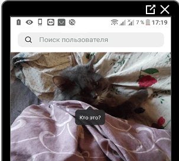
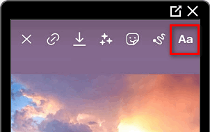
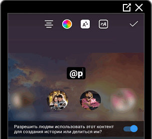
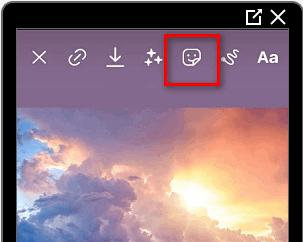
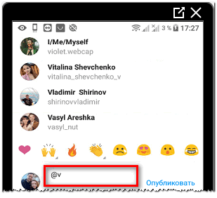
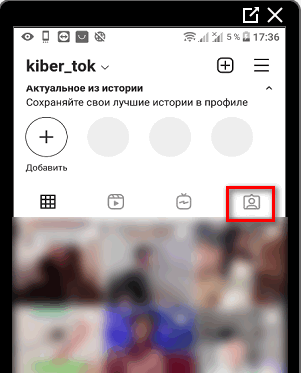

Все способы отметить профиль в Инстаграме

Отметить профиль в Инстаграме* можно в Истории, публикации, комментарии. Помимо отметки для другого пользователя, можно выделить и геолокацию. Социальная сеть предлагает несколько инструментов, как сделать публикации интереснее и связаться с людьми, которые находятся неподалеку.
Поставить отметку в публикации Инстаграма*
Если на фотографии или видео, размещенных в Instagram*, присутствует несколько человек – их можно отметить. Посетители страницы смогут перейти в профиль к отмеченным, а последние, в свою очередь, выбрать: показывать ли фото с отметкой в своем профиле. Как отметить человека на снимке:
- Перейти в Инстаграм* – нажать: «Создать публикацию».
- Выбрать снимок из Галереи или сделать с помощью «Камеры».
- Отредактировать – пункт: «Описание» и «Отметить».

- Поставить метку рядом с лицом человека – ввести название профиля.

- Сохранить и опубликовать.
В описании никнеймы не будут указаны, а отмеченные на снимке получат уведомления. При необходимости, они могут отказаться от отметки и тогда у автора она также будет удалена.
Отметить человека в Истории
Есть два варианта, как отметить человека в Сторис:
- инструмент «Текст»;
- стикер с отметкой.
Как и с публикациями, необязательно размещать картинку, где есть этот человек. И если поставить метку, все отмеченные получат уведомление и смогут перейти к публикации. Но из Истории удалить плашку о себе уже не получится.
Как указать друзей с помощью текста:
- Сделать Сторис – нажать сверху по значку: «Аа».

Вставить перед никнеймом символ: «@» - начать вводить ник.
Выбрать из выпадающего списка или ввести полностью.- Отрегулировать положение на снимке или видео.
- Опубликовать.
Но если владелец страницы размещает Сторис для «Близких друзей», куда отмеченный не входит, он не получит уведомлений. Второй вариант, как указать на участвующих:
- Записать Историю – нажать сверху: «Стикеры».
- Выбрать: «Упоминания» - ввести никнейм и выбрать оформление.

- Опубликовать.
Чтобы отредактировать оформление отметки, нужно нажать по ней несколько раз. Инстаграм* предлагает три варианта: прозрачный текст, на белом фоне или разноцветный текст.
Отмечаем в комментариях
Отметить профиль в Инстаграме* возможно и с помощью комментариев. Владельцу страницы нужно запомнить никнейм того человека, которого он хочет указать. Как только второму придет уведомление, он сможет перейти к перечню отзывов и добавить свой. Как отметить в комментариях:
- Выбрать публикацию с открытыми отзывами.
- Перейти к написанию комментария – поставить значок «@».

- Вписать никнейм выбранного пользователя – отправить.
Если ввести символ «@» появится список участников беседы. Это необходимо, если кто-то из собеседников хочет создать отдельную ветку отзывов и указывает на аккаунт человека, которого нет в списке друзей.
Отметки в комментариях также применяются, если нужно участвовать в акциях или розыгрышах. Большинство брендов таким образом привлекают новых клиентов, прося постоянных «отмечать друзей» в количестве от трех человек.
Отметки брендированного контента
Брендированный контент – это публикации, которые были спонсированы компаниями, созданы при участии других блогеров. Воспользоваться функцией могут только владельцы бизнес-аккаунтов или со статусом «Автор». Отметить спонсора:
- Создать публикацию – перейти к разделу: «Описание».
- Расширенные настройки – Отметить партнера.
- Ввести название аккаунта – Сохранить.
Отличия от стандартной отметки в том, что страница спонсора будет указана над постом. Это не работает, как обычная метка друзей или чужих аккаунтов. Нажав по наименованию страницы спонсора, зритель перейдет в его профиль.
Вариант с брендированным контентом применяется блогерами, если нужно сделать прямую рекламу. Или, в последнее время, активно применяется при коллаборациях нескольких инфлюенсеров. Но есть несколько правил, которые нужно соблюдать при работе с брендированным контентом. Запрещено:
- отмечать спонсора без согласия. Заранее указать в разделе «Спонсоры» и попросить сделать то же самое с другого профиля;
- добавлять водяные знаки;
- вставлять рекламный ролик.
Это работает для постов с одной или двумя фотографиями. Видео используют лишь в том случае, если это непрямая реклама.
Если Инстаграм* не находит человека
Есть несколько причин, почему социальная сеть может не найти искомого человека. Первое, что нужно сделать автору публикации – проверить активность страницы выбранного пользователя. Основные причины, почему нельзя обнаружить знакомого или друга:
- его страница заблокирована или удалена;
- он заблокировал автора публикации;
- неправильно введенный никнейм;
- запретил себя упоминать.
Отметить можно даже закрытые страницы. Но в настройках конфиденциальности есть пункт: «Запретить упоминать мой профиль». В этом случае, выбирая из списка на отметку, аккаунт такого человека не будет ярким. То есть, аватарки остальных пользователей будут яркими, а на заблокировавших функцию – бледным.
Чтобы проверить блокировку на свой профиль, нужно перейти к выбранному человеку. Если у него есть описание, аватарка, но исчезли все публикации – значит он заблокировал. При полной блокировке учетной записи пропадают не только посты, но и данные о владельце.
Где смотреть кто тебя отметил
В Инстаграме* есть два раздела, где показаны отметки: Уведомления и отдельный: «Фото со мной». Во втором появляются только публикации из закрытых и открытых профилей. Но из скрытых видны лишь владельцу отмеченного аккаунта. Как посмотреть через раздел «Фото со мной»:
- Зайти в Инстаграм* – Мой профиль.
- Нажать по значку в виде метки, над списком публикаций.

- Посмотреть все снимки, где был отмечен.
Второй вариант – перейти к уведомления. Но если метку поставили более недели назад – оповещение может пропасть среди остальных.
Как посмотреть через уведомлений:
- Открыть приложение – нажать снизу по значку в виде «сердечка».
- Посмотреть список ранее отправленных оповещений.
Нажав по уведомлению, можно перейти к публикации, оставить комментарий или отметить свою метку.